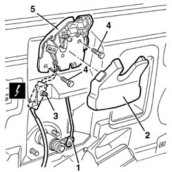

7015B10 single tailgate lock - r+r or repair with panel/protection removed
- Path
- Procedures > 70 FITTINGS > 7015 TAILGATE/ > 7015B tailgate locking/opening devices > 7015B10 single tailgate lock - r+r or repair with panel/protection removed
- Kind
- repair procedure (removal / refitting; the operation number is the code)
- Applies to
- all engines; all production periods
- Interactive page
- https://sloeber94.github.io/elrnDB-a156/en/#/3238711
Applies to: all engines; all production periods; only with equipment: Station Wagon
 Removing
Removing
 Refitting
Refitting7040G36 BULB HOLDER FOR LOAD CARRYING COMPARTMENT lighting on tailgate - R.R.
7015A05 tail-gate lower interior panel-r r
1. Disconnect the rod from the lock barrel.
2. Remove the lock cover.
3. Release the retainer for the electrical connection and disconnect it.
 | Name | Connector |
|---|---|---|
3 | Boot opening switch |
4. Unscrew the bolts
5. Remove the lock complete with rod and catch.

Applies to: all engines; all production periods; only with equipment: Station Wagon
Refitting
RemovingCheck that the lock is undamaged.
Fit the lock and tighten its bolts.
Connect the electrical connection and secure it to the tailgate.
Fit the lock cover.
Connect the link to the lock barrel.
7015A05 tail-gate lower interior panel-r r
7040G36 BULB HOLDER FOR LOAD CARRYING COMPARTMENT lighting on tailgate - R.R.
Topics linked from this page (3)
- 7015A05 tail-gate lower interior panel-r r
- 7040G36 BULB HOLDER FOR LOAD CARRYING COMPARTMENT lighting on tailgate - R.R.
- I11 Boot opening switch ( LEFT TAILGATE )